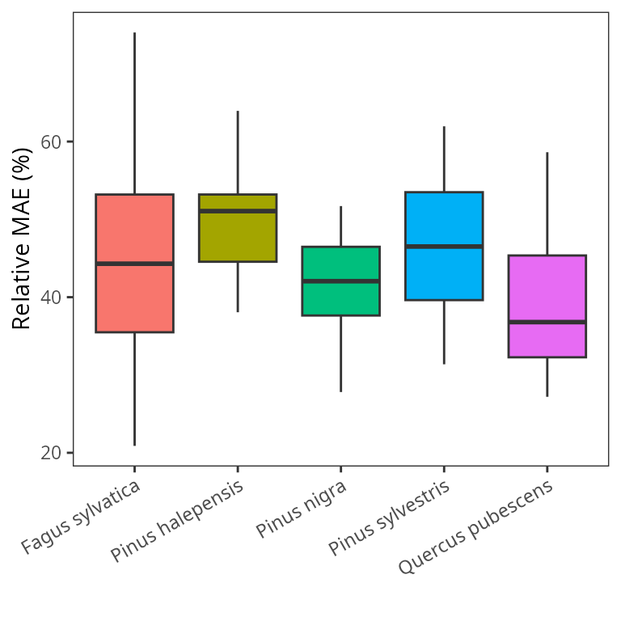

Growth calibration
Miquel De Cáceres
2022-02-28
Source:vignettes/parametrization/GrowthCalibration.Rmd
GrowthCalibration.RmdIntroduction
Goals
The growth model included in medfate implements processes regulating plant carbon balance and growth. Species-level parameter values for these processes are obtained from: (a) global functional trait databases; (b) meta-modelling exercises; (c) model calibration exercises. The main goal of the current exercise is to obtain suitable values (via model calibration) for parameters related with the maintenance respiration costs, formation rates and senescence rates of sapwood, because these are difficult to obtain using other means. At the same time, the exercise provides information on the performance of the model to predict secondary growth at the tree and stand levels.
Observational data
The data set used for the calibration exercise corresponds to 75 permanent forest plots of the Spanish National Forest Inventory located in Catalonia. Forest plots correspond to pure stands whose dominant species are Fagus sylvatica, Pinus halepensis, Pinus nigra, Pinus sylvestris or Quercus pubescens. There are 15 plots per each dominant species and each set of 15 plots encompass a range of climatic aridity. Dendrochronological series are available for up to 6 trees per plot, which conforms the observational data for the calibration exercise. In addition, local measurements were made in 2015 for sampled trees of the same plots which included (a) the leaf area to sapwood area ratio (Al2As) and specific leaf area (SLA). Plot-level averages are used as parameter values for the dominant target species in this exercise.
Target parameters for calibration
The model parameters for which we desired good estimates are:
- Sapwood daily respiration rate (RERsapwood) - Used to modulate maintenance respiration demands of living sapwood tissues (parenchyma, cambium, phloem, etc.), which in large trees may also represent a large fraction of maintenance respiration.
- Sapwood maximum growth rate (RGRsapwoodmax) - Used to modulate maximum daily sapwood growth rates (relative to current sapwood area). Actual relative growth rates include temperature and sink limitations to growth.
- Sapwood daily senescence rate (SRsapwood) - Used to determine the daily proportion of sapwood that becomes heartwood. It regulates the area of functional sapwood, together with the sapwood maximum growth rate.
In addition, soil stoniness in the target plots had been estimated from surface stoniness classes. Since soil rock fragment content (rfc) has a strong influence on soil water capacity, we decided to include the proportion of rocks in the second soil layer (between 30 and 100 cm) as a parameter to be calibrated.
Sensitivity analysis
We conducted a variance-based global sensitivity analysis of model parameters including those to be calibrated and others that we estimated important to determine secondary growth. For the sensitivity analysis we selected a forest plot dominated by Pinus sylvestris, where we collapsed forest structure into a single tree cohort and run simulations using daily weather between 2001 and 2005.
First we conducted the sensitivity analysis using the final basal area of the stand as the response function.

The variable that primarily determines growth rate is WUE, which, together with the transpiration rate determines carbon availability, but the maximum sapwood growth rate comes right after. We repeated the sensitivity analysis but using the coefficient of variation of annual BAI as response function:

From these results we see that other parameters are relevant to determine inter-annual variability in secondary growth.
Calibration procedure
For each forest plot, we matched each available dendrochronological series with a forest inventory tree cohort by finding which tree (in the IFN3 sampling) had the DBH most similar to that estimated from the dendrochronology at year 2000. Then, we took the series of annual basal area increments (BAI) as the observations to be matched by model secondary growth predictions for the matched tree cohort.
Simulations were performed using daily weather data for each target plot, obtained via interpolation using package meteoland (2001 - 2015 period), and soil physical characteristics where drawn from SoilGrids data base. Water use efficiency parameters (WUE and WUE_decay) were given values resulting from the meta-modelling exercise, whereas other parameters of the sensitivity analysis were left to the species-level defaults of SpParamsMED. We calibrated the four target parameters for the target dominant species of the target plot using a genetic algorithm (function ga from package GA). Model parameter values were assumed to be the same for all cohorts of the target species, while the remaining species in the plot were given default constant parameter values. The objective function for the genetic algorithm was the average, across cohorts with observed dendrochronology series, of the mean absolute error (MAE) resulting from comparing observed and predicted annual BAI series. Population size for the genetic algorithm was set to 40 individuals. A maximum of 25 iterations of the genetic algorithm were allowed, and the calibration procedure stopped if the best parameter combination did not change during 5 consecutive iterations.
| Minimum | Maximum | |
|---|---|---|
| RERsapwood | 1.0e-06 | 1.0e-04 |
| RGRsapwoodmax | 1.0e-04 | 1.0e-02 |
| SRsapwood | 1.0e-05 | 2.5e-04 |
| rfc@2 | 2.5e+01 | 9.5e+01 |
Calibration results
Error function
The following left panel shows the distribution of the final (optimum) values of the error function by dominant species, whereas the right panel shows the distribution of error values in relative terms (as a percentage of the mean observed BAI): 
The following table shows the same error values after averaging plot values by species, functional group (angiosperm/gymnosperm), and the overall averages:| N | Mean BAI (cm2/yr) | MAE (cm2/yr) | MAE (%) | |
|---|---|---|---|---|
| Fagus sylvatica | 15 | 14.911874 | 7.497138 | 49.11796 |
| Pinus halepensis | 15 | 9.353759 | 4.932243 | 53.91233 |
| Pinus nigra | 15 | 6.391289 | 3.287372 | 52.45179 |
| Pinus sylvestris | 15 | 9.344288 | 4.101238 | 43.96889 |
| Quercus pubescens | 15 | 6.494994 | 2.704939 | 40.25582 |
| Angiosperm | 30 | 10.703434 | 5.101038 | 44.68689 |
| Gymnosperm | 45 | 8.363112 | 4.106951 | 50.11101 |
| All | 75 | 9.299241 | 4.504586 | 47.94136 |
Parameter distribution and covariance
The following panels show the distribution of calibrated parameter values by species (gray dashed lines indicate the parameter value limits used in the calibration procedure):

The following table shows mean parameter values by species, functional groups and overall means:
| RERsapwood | RGRsapwoodmax | SRsapwood | rfc@2 | |
|---|---|---|---|---|
| Fagus sylvatica | 3.92e-05 | 0.0015078 | 0.0001923 | 49.16529 |
| Pinus halepensis | 5.94e-05 | 0.0011373 | 0.0001840 | 47.45507 |
| Pinus nigra | 6.37e-05 | 0.0010293 | 0.0001710 | 53.62743 |
| Pinus sylvestris | 4.74e-05 | 0.0018711 | 0.0001298 | 63.87467 |
| Quercus pubescens | 4.31e-05 | 0.0019525 | 0.0001599 | 56.40603 |
| Angiosperm | 4.25e-05 | 0.0015839 | 0.0001742 | 55.01730 |
| Gymnosperm | 5.75e-05 | 0.0012376 | 0.0001509 | 56.31593 |
| All | 4.76e-05 | 0.0013526 | 0.0001663 | 56.06072 |
Some differences can be observed between species, those are not always statistically significant, as shown in the following ANOVA tables:
## Analysis of Variance Table
##
## Response: RERsapwood_cal
## Df Sum Sq Mean Sq F value Pr(>F)
## Species 4 3.3106e-09 8.2764e-10 1.8322 0.1323
## Residuals 70 3.1621e-08 4.5173e-10## Analysis of Variance Table
##
## Response: RGRsapwoodmax_cal
## Df Sum Sq Mean Sq F value Pr(>F)
## Species 4 2.1448e-05 5.3620e-06 4.465 0.002851 **
## Residuals 70 8.4063e-05 1.2009e-06
## ---
## Signif. codes: 0 '***' 0.001 '**' 0.01 '*' 0.05 '.' 0.1 ' ' 1## Analysis of Variance Table
##
## Response: SRsapwood_cal
## Df Sum Sq Mean Sq F value Pr(>F)
## Species 4 2.1319e-08 5.3299e-09 1.7809 0.1424
## Residuals 70 2.0950e-07 2.9928e-09## Analysis of Variance Table
##
## Response: rfc_cal
## Df Sum Sq Mean Sq F value Pr(>F)
## Species 4 287.2 71.81 0.1858 0.945
## Residuals 70 27051.4 386.45Finally, the following panels illustrate the overall lack of covariance between calibrated parameter values: 
Final evaluation
Finally, we wanted to evaluate the reduction in predictive error of secondary growth attained by calibrating growth parameters. Moreover, since applications of the growth model will normally be on plots lacking growth observations, we wanted to assess the predictive error of species-level parameter averages and overall parameter averages. Hence, we ran the growth model on the forest plots using either species-level averages or the overall averages of the calibrated parameters. In this second case, we excluded from the values to be averaged those corresponding to plots where relative MAE was > 100%, assuming that calibration was not successful in those cases. The following table shows the species-level parameter values:
| RERsapwood | RGRsapwoodmax | SRsapwood | |
|---|---|---|---|
| Fagus sylvatica | 3.92e-05 | 0.0015078 | 0.0001923 |
| Pinus halepensis | 5.94e-05 | 0.0011373 | 0.0001840 |
| Pinus nigra | 6.74e-05 | 0.0011329 | 0.0001724 |
| Pinus sylvestris | 4.74e-05 | 0.0018711 | 0.0001298 |
| Quercus humilis | 4.31e-05 | 0.0019525 | 0.0001599 |
The following panels show the prediction error (either absolute or relative) for the annual BAI, as done above but including the new simulations: 
| Species | Observed (cm2/yr) | MAE plot (cm2/yr) | MAE spp (cm2/yr) | MAE all (cm2/yr) | MAE plot (%) | MAE spp (%) | MAE all (%) |
|---|---|---|---|---|---|---|---|
| Fagus sylvatica | 13.397220 | 4.078136 | 8.982115 | 8.861270 | 50.88566 | 75.89939 | 74.94121 |
| Pinus halepensis | 9.406959 | 4.686680 | 5.992966 | 6.919882 | 54.64118 | 71.37854 | 78.41112 |
| Pinus nigra | 6.290914 | 2.992043 | 3.714471 | 4.610376 | 51.52412 | 59.86520 | 67.98232 |
| Pinus sylvestris | 8.569506 | 3.580589 | 5.543777 | 4.397769 | 41.70672 | 64.69191 | 60.61788 |
| Quercus humilis | 4.963597 | 2.260871 | 4.613760 | 4.194019 | 34.93283 | 60.99750 | 68.00907 |
We also evaluated the performance of the model in terms of predicting total basal area growth during the 15 years simulated, where we again used as error function the mean absolute error:

| Species | Observed (cm2) | MAE plot (cm2) | MAE spp (cm2) | MAE all (cm2) | MAE plot (%) | MAE spp (%) | MAE all (%) |
|---|---|---|---|---|---|---|---|
| Fagus sylvatica | 181.79688 | 45.46386 | 101.33092 | 107.76871 | 29.80366 | 66.82350 | 69.85677 |
| Pinus halepensis | 120.85361 | 43.25101 | 69.00001 | 72.80217 | 40.22474 | 67.25176 | 70.81375 |
| Pinus nigra | 86.42111 | 30.95897 | 37.56548 | 43.59079 | 29.50119 | 42.40838 | 55.17855 |
| Pinus sylvestris | 116.74324 | 31.85913 | 49.14639 | 47.06167 | 32.17822 | 57.46262 | 46.84358 |
| Quercus humilis | 68.43315 | 20.58177 | 54.11374 | 52.34985 | 27.10539 | 58.16390 | 61.93859 |
From these results, it is apparent that the calibration improved substantially the predictive capacity of the model. More importantly, using species-level averages or overall averages do not seem to increase substantially prediction errors, compared to plot-level calibrated parameter values.